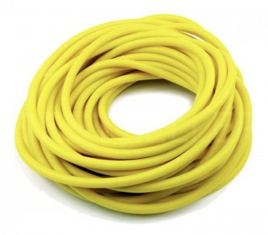
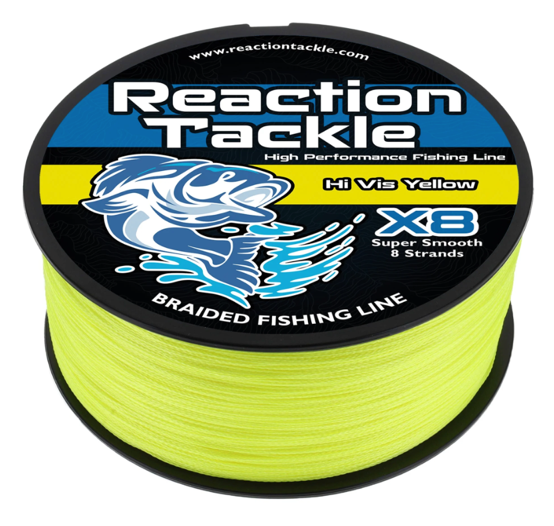
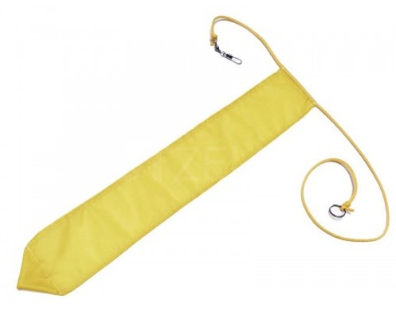
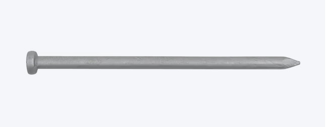
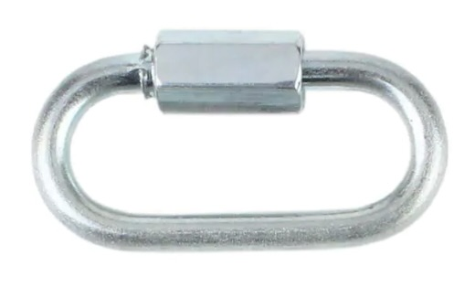
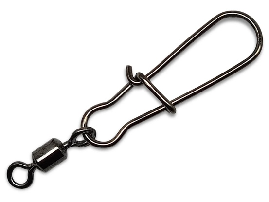
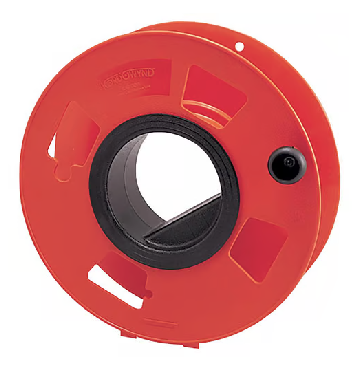
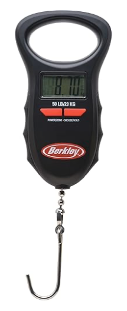

F3L High-start Construction
By Ed LaCroix — AMA 290291 — April 2026
Sailplanes typically have two ways to be “launched” into the air to altitude so that thermals can then be sought out for extended flight. The sailplane can use an electric motor for propulsion, or it can be towed into the air by either a winch or a high-start/bungee device.
I won’t discuss the winch option as they are not used by F3L planes of the type used in current day F3L competitions. High-starts are the accepted method. And if a pilot is going to spend the time and money to build a high-start for personal use, it’s wise to consider making it a F3L legal high-start so that they can best replicate the launch of their plane as it would be at an F3L contest.
F3L Legal High-start Requirements
F3L rules state the following for an F3L legal high-start:
The hi-start consists of a rubber tube of 15 ± 0.2 meters length, a nylon towline of 100 ± 1 meter’s length with a minimum diameter of 0.7 mm and an attached pennant (a streamer is what is meant by pennant — not a parachute).
The pull strength of the rubber tube shall not exceed forty Newtons (4 kgf) — that’s 8.99 or 9 pounds of “pull” if a digital fishing scale were used to measure the rubber when stretched to 45 meters or 147 feet.
In the scheme of personal high-starts, that your rubber meets the F3L rule requirements is not terribly important. It is important that the contest organizers supply high-starts that meet the rules.
Your interest is in assembling a quality high-start using durable components that will allow you to launch your F3L planes at very close to contest altitudes. So let’s begin with describing what you need and where to get it and why.
Parts List
1. 15m Length of High-start “Rubber” Tubing
The “motor” in your high-start assembly is elastic tubing of a diameter that will be close to providing the pull specified in the rules above. I put rubber in quotes because the best material is not rubber but rather silicone tubing.
Rubber tubing, typically surgical latex rubber tubing, is not very UV resistant and therefore it degrades (starts to form cracks which lead to breakage) pretty quickly. Silicone tubing has shown to be much longer lived — often providing several years of use before needing replacement.
2. 100 Meters (328 Feet) of Nylon Line, 0.7mm or Larger
The best type of line is braided fishing line. Typically, 150-pound test braided line is 0.7 mm in diameter.
3. Pennant for the Glider End of the High-start
The pennant has a ring that hooks to the glider. For personal use, a parachute can be used, but it adds weight to the system, and in a breeze means that end of the high-start can drift a considerably greater distance than a streamer will.
4. Ground Stake
You need a way to firmly anchor the tubing end of the high-start to the ground. Stretching out the tubing may only exert 9 pounds of pull but that still requires a very solid anchor — if the ground stake were to pull out under load it would be quite dangerous. So the stake needs to be long and strong.
5. Hardware to Assemble the Components
This amounts to a quick-link and some quality fishing snap-swivels.
6. Extension Cord Reel
A high-start needs to be stored on something that allows it to be easily laid out and also taken up after use. The best thing for the dollar is a plastic extension cord reel.
Material Sources
High-start Silicone Tubing — 15m (49 ft)
Hyperflight’s silicone tubing comes with both ends ready to accept a quick-link for the anchor stake and the other end to accept a snap-swivel connected to the tow-line.

150 Pound / 0.7mm Braided Nylon Line
FAI legal diameter. Order the 300 yard spool and you have more than enough for a second 100m long F3L legal tow-line.

Pennant / Streamer
The Hyperflight streamer comes finished with a welded ring for hooking to the tow-hook on the glider and being attached to one end of the braided tow-line. The other end has a snap swivel — I recommend replacing the supplied swivel with a Gamakatsu snap for greater reliability.

Anchor Stake
This “stake” is an 8 inch long, 3/8 inch diameter nail or spike. The link goes to Lowe’s but Home Depot may also sell it. The length of this nail is not overkill — for safety, you need significant ground penetration. The nail will pass through one end of the quick-link recommended below.

3/16-inch Quick Link
This quick link is large enough to easily allow the insertion of the anchor spike through it when staking down your high-start.

Snap Swivels
The snap-swivel I recommend for both ends of the towline is the 5-pack of the Size 7 (75 lb) Gamakatsu snap-swivels (PN 406400-7). They will easily connect the line to the screw-eye at one end of the Hyperflight silicone bungee tubing.

Extension Cord Reel
The reel this link takes you to is one that will minimize snagging the line when reeling it up. However, every home goods store — Lowe’s, Home Depot, etc. — likely sells these reels.

Digital Fishing Scale
If you want to experience launches with accuracy, you will need to know how far back to pull your glider once hooked up to the high-start. Though this Berkley scale isn’t the cheapest on Amazon, its 50 lb maximum (most are 110 lb) suggests it may be more accurate at the 4 kg / 9 lb pull that is F3L specified. This scale can be set to show either pounds or kilograms.

Knot-sense
You’re going to need to tie both ends of braided tow-line to snap-swivels for easy disassembly of the line from the tubing and the streamer should the need arise. And knowing a proper, self-clinching knot is a handy thing in general. Knots go by an array of names even for the same knot.
In this case, the Halyard knot is the one I recommend.
Assembly Process
The worst part of building your F3L high-start is measuring out the 100 meters of line and tying a snap swivel to each end with the Halyard knot. After those things have been done, the process amounts to:
- Attach the quick-link to one end of the Hyperflight tubing.
- Tie a Size 7 snap-swivel to each end of the tow-line using the Halyard knot.
- Clip the snap-swivel on the tow-line to the other end of the Hyperflight tubing.
- Replace the Hyperflight streamer’s supplied snap-swivel with one of the Gamakatsu snaps.
- Attach the snap-swivel on the tow-line to the Hyperflight streamer’s snap-swivel.
- Starting with the streamer end, begin reeling up the line on the extension cord reel.
TIP: Find a short wood screw that you can screw into the side of the cord reel fairly close to the center hub. Leave about 3/16” of the screw sticking out — be sure it doesn’t interfere with winding the reel. This will give you something to hook the streamer’s metal ring to before you start reeling up the bungee.